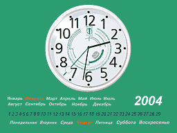

На нашем сайте вы можете получить хранитель экрана (ScreenSaver) – часы с календарем и символикой МАКМАХ (обновленная версия)
Предлагаем вашему вниманию экранную заставку - часы с календарем и символикой МАКМАХ, сделанную нашими специалистами (обновлённая версия). Показывает текущее время (часы, минуты и секунды), число, день недели, месяц и год.
Установка: просто запустите полученный файл. После установки IACMAC ScreenSaver станет хранителем экрана по умолчанию. Работает в Windows 9x/ME/NT/XP.
